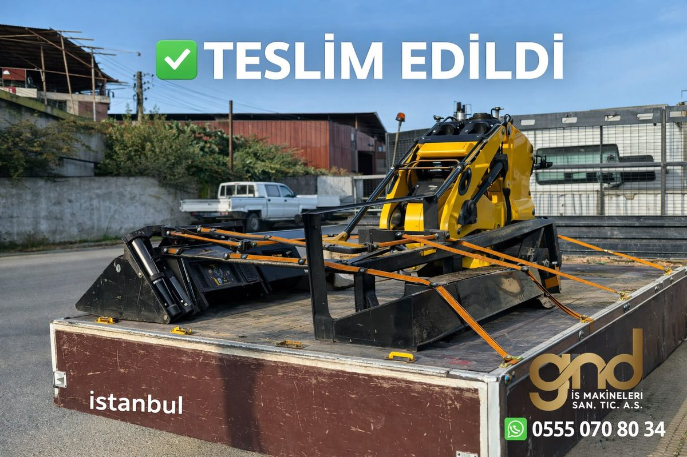
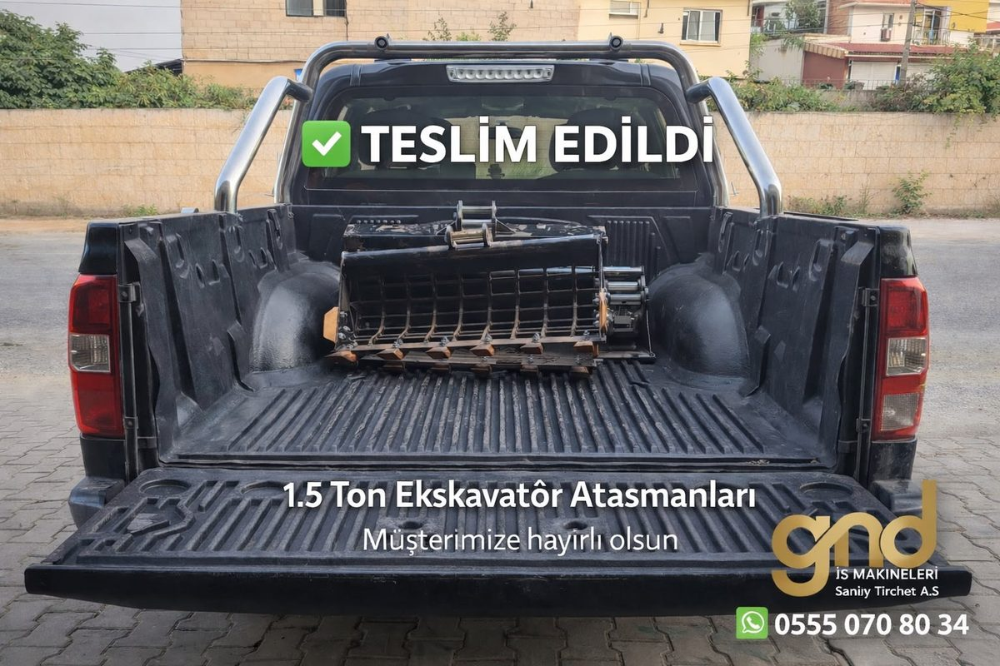
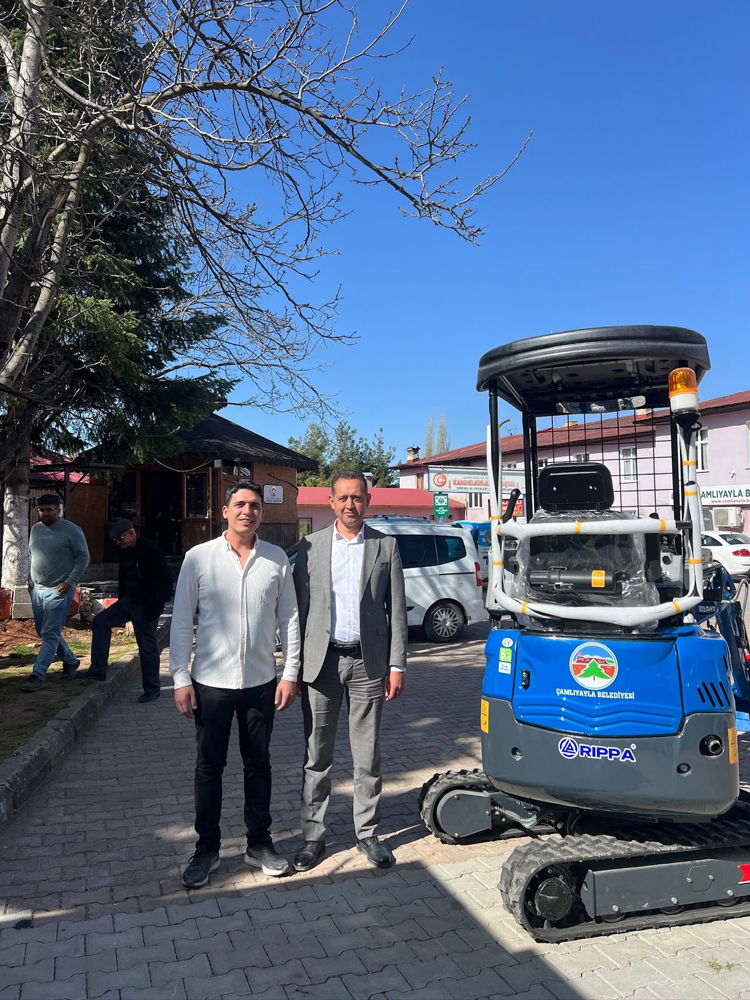
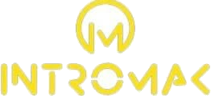
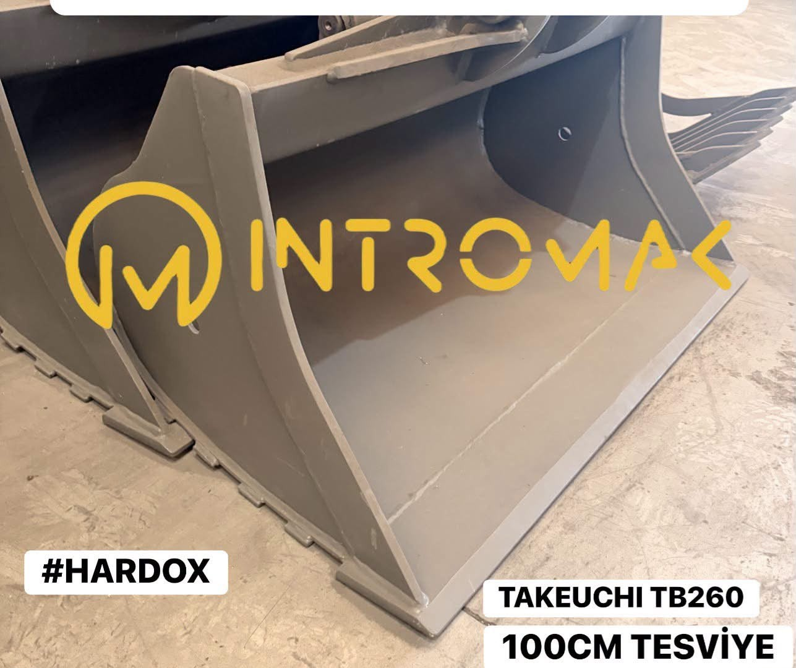
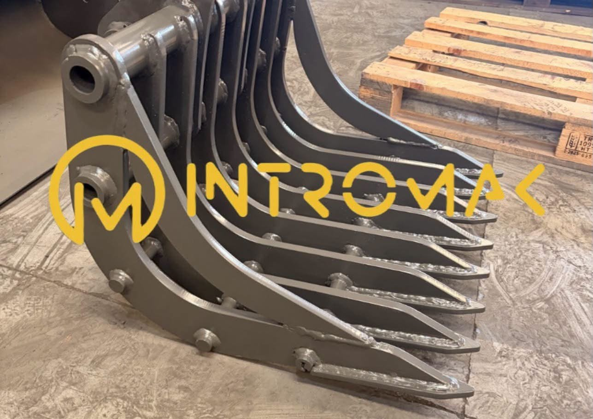

Hafriyat, madencilik ve inşaat sektörü için geniş makine kategorileri. İhtiyacınızı söyleyin, size özel teklifi WhatsApp üzerinden anında iletelim.
Makineleri İnceleSabit stok tutmuyoruz — her talep için doğru makineyi global ağımızdan araştırıp size özel teklif hazırlıyoruz. Süreç şöyle işliyor:
İhtiyacınızı WhatsApp üzerinden iletin: makine tipi, sıfır/2. el tercihi, bütçe ve zamanlama.
Üretici partnerlerimiz ve global tedarik ağımızdan talebinize uygun makineleri araştırıyoruz.
Bulduğumuz makinelerin teknik durumunu, çalışma saatini ve belgelerini kontrol ediyoruz.
Size özel fiyat, teknik detay ve teslimat süresini içeren somut bir teklif sunuyoruz.
Nakliye ve gümrük süreçlerini koordine ederek makinenizi size ulaştırıyoruz.
Her kategori için detaylı teklif almak üzere doğrudan WhatsApp üzerinden bize ulaşın.
Filtre, mekanik, hidrolik grupları ve ataşmanlar için bize ulaşın.
GND İş Makineleri Sanayi ve Ticaret A.Ş., iş makineleri, endüstriyel ekipmanlar ve uluslararası ticaret alanında faaliyet gösteren, müşterilerine güvenilir tedarik çözümleri sunmayı hedefleyen bir ticaret ve çözüm ortağıdır.
Kurucumuz, vizyonumuz ve şirket yolculuğumuz hakkında daha fazla bilgi →
Ekskavatör, yükleyici, delici, kırıcı, forklift ve diğer ağır iş makinelerinin uluslararası tedariği.
Madencilik sektörüne yönelik makine, ekipman ve yedek parça çözümleri.
Sanayi tesisleri için makine, ekipman ve teknik tedarik hizmetleri.
Küresel üreticiler ile müşteriler arasında güvenilir ticaret süreçlerinin yönetimi.
Üretici araştırması, teklif yönetimi, lojistik koordinasyonu ve satın alma süreçlerinin planlanması.
Projenizi planlamak için hızlı ve ücretsiz hesaplayıcılar — kesin bilgi için WhatsApp'tan bize ulaşın.
Kazı hacmini ve şişme sonrası taşınacak hacmi hesaplayın.
Döşeme veya temel için gereken beton hacmini hesaplayın.
Malzeme hacmine göre gereken sefer sayısını hesaplayın.
İşinize uygun ekskavatör sınıfı için öneri alın.
Tahmini yakıt tüketimi ve maliyetini hesaplayın.
İşinizin ne kadar süreceğini tahmin edin.
FOB fiyat, navlun ve vergilere göre toplam ithalat maliyetini hesaplayın.
Makine ağırlık sınıfı ve iş türüne göre önerilen ataşmanı görün.
Resmi üretici verilerine dayanan, tarafsız teknik özellik karşılaştırmaları.
Orta sınıf ekskavatör teknik özellik karşılaştırması.
Kepçe-loader teknik özellik karşılaştırması.
Dozer teknik özellik karşılaştırması.
Lastikli yükleyici teknik özellik karşılaştırması.
Yerli üretici ile küresel lider ekskavatör karşılaştırması.
Skid steer loader teknik özellik karşılaştırması.
Manlift (boom lift) teknik özellik karşılaştırması.
Greyder teknik özellik karşılaştırması.
Silindir teknik özellik karşılaştırması.
GND İş Makineleri Sanayi ve Ticaret A.Ş. olarak kaliteyi yalnızca ürün ve hizmetlerimizde değil, tüm iş süreçlerimizin temelinde görüyoruz. Müşteri memnuniyetini esas alan yaklaşımımız doğrultusunda; güvenilir, hızlı ve sürdürülebilir çözümler sunmayı, uluslararası kalite standartlarına uygun çalışmayı ve sürekli gelişimi kurum kültürümüzün ayrılmaz bir parçası olarak benimsiyoruz.
Sürdürülebilir büyümenin; etik ticaret, çevresel sorumluluk ve verimli kaynak yönetimiyle mümkün olduğuna inanıyoruz. Dijitalleşme, veri odaklı süreç yönetimi ve yenilikçi teknolojileri iş modellerimize entegre ederek daha verimli, daha güvenilir ve daha sürdürülebilir ticaret çözümleri geliştirmeye devam ediyoruz.
Gerçekleştirdiğimiz teslimatlardan bazı kareler.




İntromak Profesyonel Makine Sistemleri — iş makinesi kova/ataşman, kauçuk palet ve tırnak adaptör tedariki yapar; yedek parça ve filtre grubu satışının yanı sıra sıfır/2. el iş makinesi alım-satımı ve ithalat-ihracat alanında faaliyet gösterir.

Kova imalatı (marka/model fark etmeksizin)
Tırnak çeşitleriAtaşman imalatı, kova, tırnak ve kauçuk palet üretimi — fiyat üretime göre değişir, teklif alın.
Teklif AlTYSIM Piling Equipment — Çin merkezli, küçük/orta ölçekli rotary sondaj (delme) makineleri, CAT şasi platformlu seri, hidrolik kazık kesme makineleri, teleskopik bum ve sondaj yedek parçaları üreten, 40'tan fazla ülkeye ihracat yapan global bir üretici.
İhtiyacınızı iletin, size en kısa sürede dönüş yapalım.
WhatsApp'tan Teklif Al info@gndmachinery.com +90 555 070 80 34Kemalpaşa Mahallesi 2559 Sokak No 1/G, Tarsus / Mersin, Türkiye
MERSİS No: 0396167795000001